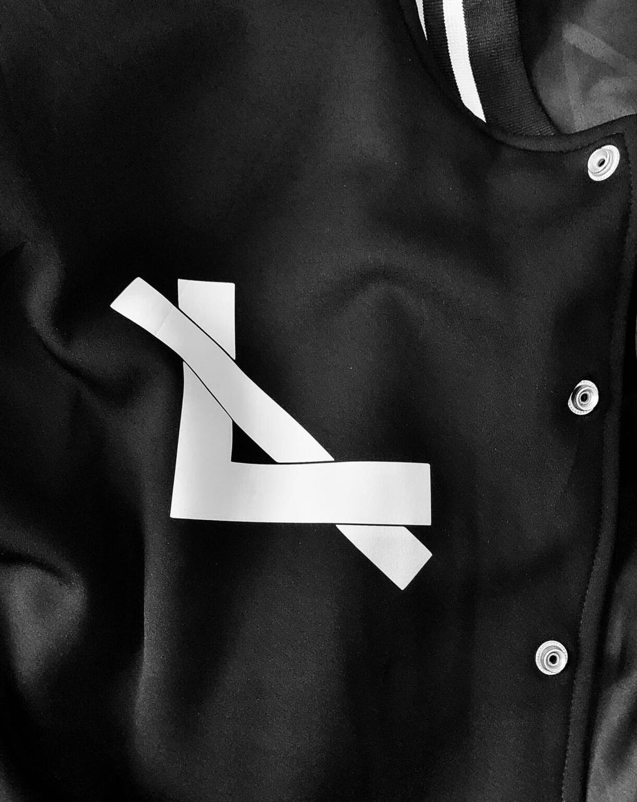

LAB23 STUDIO IS AN ART COLLECTIVE DEDICATED TO EXPLORING THE GAPS BETWEEN MODERN & CLASSIC ARTISTIC ENDEAVOURS.

Classical and modern artistic endeavours differ in many ways but they both have significant impacts on the development of art and contine to influence many artists today..
The goal is to create a new paradigm in the art ecosystem by blending the best of modern and classic artistic styles and technique through fashion, photography, architecture, and many other various expressions of art.